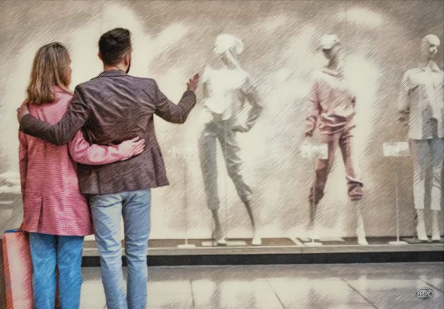
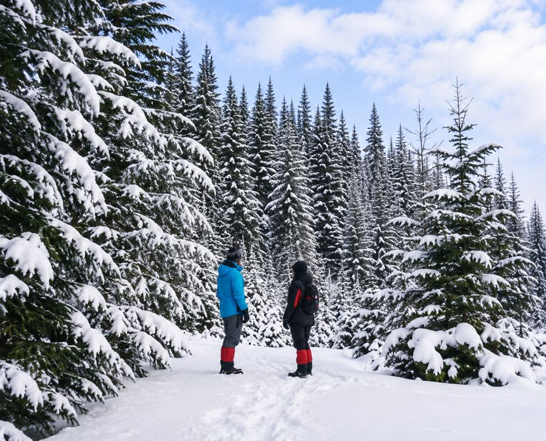
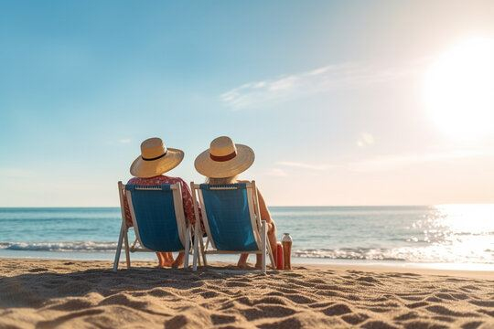
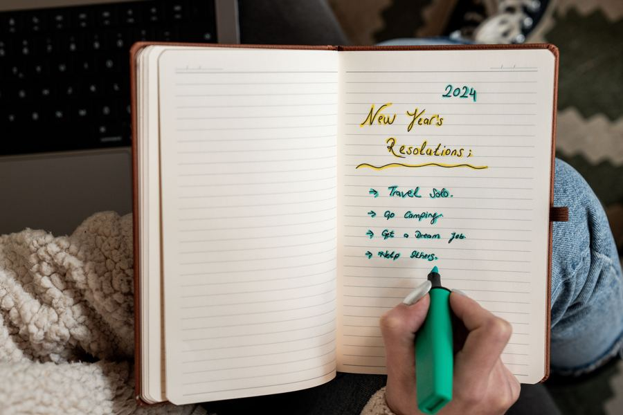

Aptis Speaking
Part 1: In this part, I am going to ask you three short questions about yourself and your interests. You will have 30 seconds to reply to each question.
1. What is your favorite time of the year?
=> I like spring because it is beautiful with green trees and flowers. The weather is warm and sunny. It is perfect for outdoor activities. In spring, I really like going on a picnic with my friends. It’s amazing. I also love taking photos of the flowers in the park during this season. Spring always makes me feel fresh and full of energy.
2. What sport is the most popular in your country?
=> In my country, football is the most popular sport. People often play with their friends after work or at the weekend. Some people watch football matches on TV. It is popular because it is interesting and we can share happy moments with other people. Sometimes my whole family gathers to watch important matches together. It is exciting when our national team wins.
3. Tell me about a typical meal in your country?
=> In my country we have three meals in a day; breakfast, lunch, and dinner. For breakfast, we often eat bread or noodle. For lunch and dinner, we often have rice, fish, meat and vegetables. After the meal, we eat some fruits. My mother always cooks fresh food every day. I think eating together as a family makes the meal more enjoyable.
Part 2: In this part, I'm going to ask you to describe a picture. Then I will ask you two questions about it. You will have 45 seconds for each response.
 |
1. Describe the picture => In this picture, I can see a man and a woman. |
2. When was the last time you went shopping?
=> Last weekend, I went shopping with my friends. I bought a dress. It was beautiful but expensive, 200 dollars. I liked it because it was comfortable and fashionable. I was very happy when I found something that fit me perfectly. I plan to wear it to a party next month.
3. Why do people like to go shopping together?
=> People like shopping together because it is fun. They can relax after a busy day and share happy moments. Also, they can give good advice. They can also help each other choose the best price. I always enjoy shopping trips with my close friends.
Part 3: In this part, I'm going to ask you to compare two pictures, and I will then ask you two questions about them. You will have 45 seconds for each response.
1. Tell me what you can see in these two pictures.
 |
 |
=> The two pictures show people relaxing in different places.
In the first picture, I can see a man and a woman. I think they are a couple. They are standing in a forest. The weather is very cool because I can see a lot of snow on the trees and on the ground. The people are wearing warm clothes.
In the second picture, I can see a couple. They are seating on the chairs and relaxing by the beach. The weather is very nice. It is sunny and perfect for outdoor activities. Both places look very peaceful and romantic. I think either one would be a lovely place for a holiday.
2. Which place do you like more: pine forests or beaches?
=> both places have different attractions, depending on people’s interests. Some people like going into the forests because they can explore the nature. For me, I prefer spending time on the beach because it is beautiful. Here I can swim in the sea, eat seafood and take a lot of photos. I also enjoy watching the sunset over the sea in the evening. It always makes me feel calm and happy.
3. Does the weather affect people's emotions? Why?
=> Yes, it does. When the weather is nice, people can go out and enjoy many outdoor activities. They can go on a picnic, run in the park and so on. It is fun and relaxing. But when the weather is bad, too hot or too cold, they feel bored and tired. They cannot go out. On rainy days, I usually stay home and feel a bit lazy. I think sunny weather always improves my mood.
Part 4: In this part, I'm going to show you a picture and ask you three questions. You will have one minute to think about your answers before you start speaking. You will have two minutes to answer all three questions.

Tell me about a time when you wanted to change yourself.
Why did you want to make that change?
Do you think changing yourself is important for personal growth?
=> Regarding the first question, today I'm going to talk about a time when I wanted to change myself. Last year, I wanted to improve my English so I studied every day and practiced speaking with my friends. It was not easy at first, but I kept trying every day.
Turning to the second question, I wanted to make that change because English is important for my job and my future. I also wanted to feel more confident when talking to foreign customers.
About the last question, I think changing yourself is important for personal growth. It helps people become better and achieve their goals. I believe that without change, people cannot improve their lives. Now I feel proud of the progress I have made.